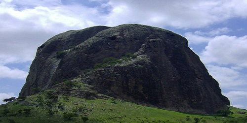
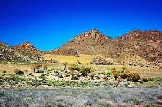
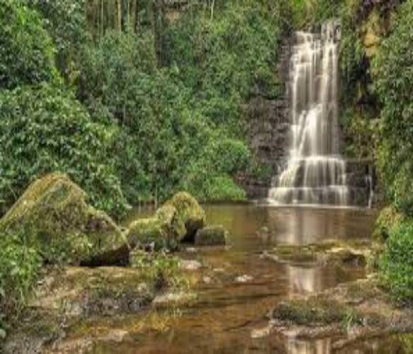
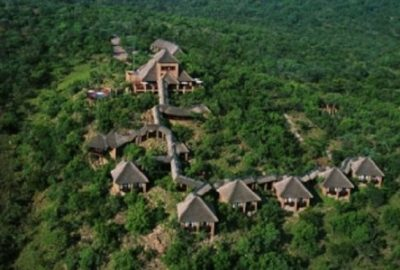
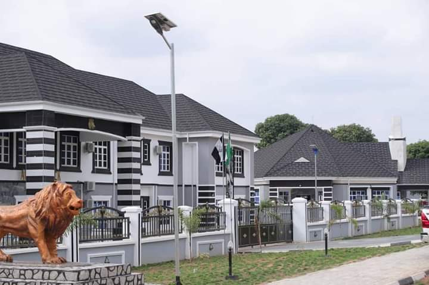
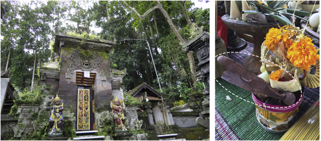
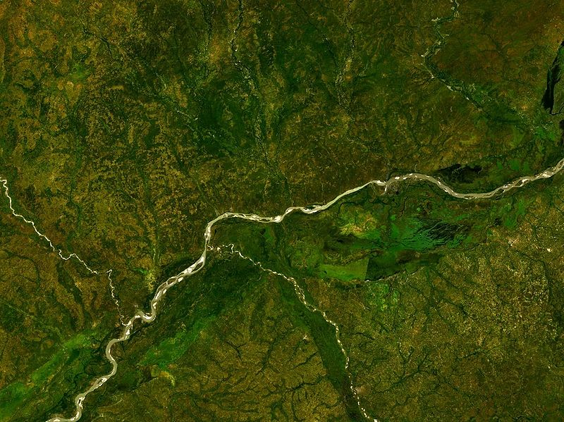
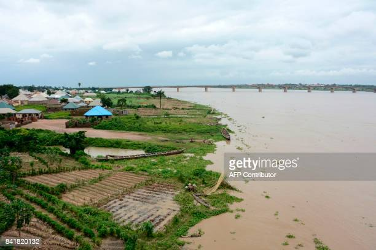

Tourist Attractions
1.Ikyogen Hills

These sprawling hills were developed into a cattle ranch in 1983.
The ranch has all-year-round thriving vegetation which is due to the weather condition of
the place. This ranch provides steady grazing areas for cattle. 2.Anwase-Abande Ranges, Kwande Local Government Area

The Anwase- Abande Ranges is a network of great hills,
valleys, streams, natural forests, and other natural formations.
The ranges stretch as far as the Nigerian- Cameroon border through
the Obudu- Cameroon 3.Enemabia Warm Spring

This is the only natural warm spring in Benue state.
A good soak in the spring can rejuvenate one’s mind and body.
The beautiful thing is that the spring is open night and day to visitors and tourists interested in grabbing
a taste of the spring’s 4.Ikwe Holiday Resort

One will find this resort that is surrounded by green vegetations soothing.
The resort incorporates the wonders of nature in its services and this makes it unique
amongst others. It is a great travel spot for tourists who crave to have privacy while
being surrounded by nature. 5.Tor Tiv Palace, Gboko

Located at Gboko, this palace is the official home of the Tiv people.
One can easily find rich, historical artefacts that tell the history of the Tiv People
just lying around begging to be explored. 6.Montane Games Reserve

7.The Most Sacred Ipinu- Igede

The Sacred Ipinu- Igede is a forest that also serves as the resting place of the ancestors
of Igede people. 8.River Oyongo And Its Seven Tributaries

According to a story told about how the tributaries came to be, it is said that they
existed after seven women from the Igede tribe willingly offered themselves to be sacrificed
for their kinsmen to cross the river Oyongo. The story says that after the sacrifices the
river parted ways into seven parts. The seven parts are still present today! 9.Rare Manatee, Katsina Ala

In this location, one can see the rare African manatee in their natural habitat.
Seeing their responses to the presence of people is an experience a tourist would find
fascinating.